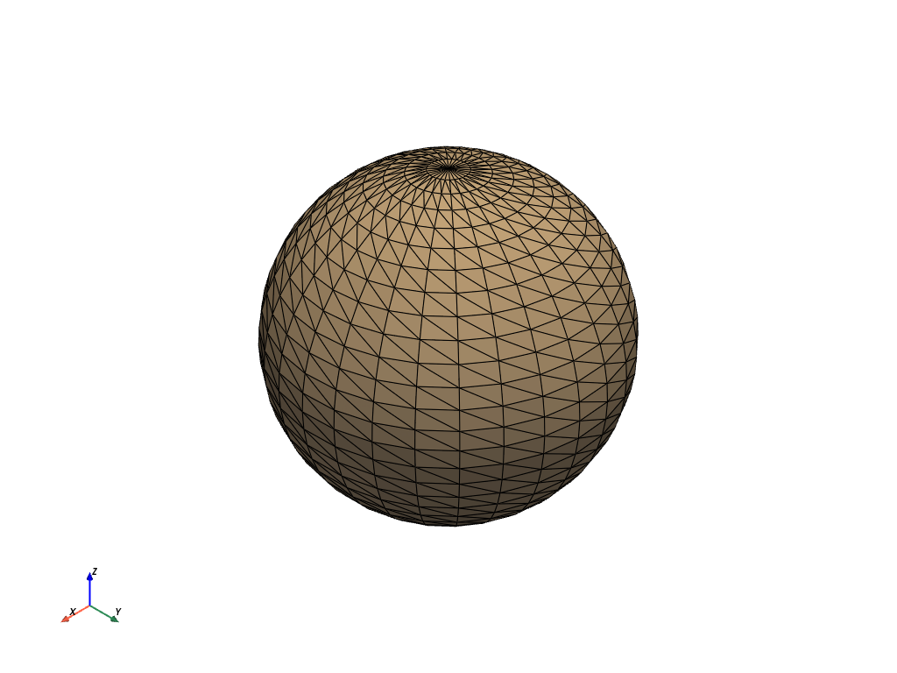

plot¶
- plot(var_item, off_screen=None, full_screen=None, screenshot=None, interactive=True, cpos=None, window_size=None, show_bounds=False, show_axes=None, notebook=None, background=None, text='', return_img=False, eye_dome_lighting=False, volume=False, parallel_projection=False, use_ipyvtk=None, jupyter_backend=None, return_viewer=False, return_cpos=False, jupyter_kwargs=None, theme=None, hidden_line_removal=None, anti_aliasing=None, zoom=None, **kwargs)[ソース]¶
vtkまたはnumpyオブジェクトをプロットします．
- パラメータ
- var_itempyvista.DataSet, vtk, か numpy object
プロットするVTKオブジェクトまたは
numpy配列．- off_screenbool,
optional Trueの場合，画面からプロットします．ウィンドウをポップアップしないでスクリーンショットを保存するのに便利です．デフォルトでは，グローバル設定のpyvista.OFF_SCREENになります．- full_screenbool,
optional ウィンドウをフルスクリーンで開きます． 有効にすると，
window_sizeを無視します． デフォルトでは，アクティブテーマ設定はpyvista.global_theme.full_screenとなります．- screenshotpython:str か bool, optional
有効にすると，スクリーンショットをファイルに保存します． 参照：
Plotter.screenshot(). デフォルトはFalseです．Trueの場合，スクリーンショットを取得し画像のnumpy配列を取得します．- interactivebool,
optional ユーザーが図をパンしたり動かしたりできるようにします． デフォルトでは
pyvista.global_theme.interactiveとなります．- cpos
list,optional カメラ位置，焦点，およびビューアップのリスト．
- window_size
list,optional ピクセル単位のウィンドウサイズです． デフォルトはグローバルテーマです．
pyvista.global_theme.window_size.- show_boundsbool,
optional Trueの場合，メッシュの境界を表示します． デフォルトはFalseです．- show_axesbool,
optional vtk axesウィジェットを表示します．
Noneの場合は，pyvista.global_theme.axes.showに従って有効になります．- notebookbool,
optional Trueの場合，作成されたプロットはjupyterノートブック内に配置されます．jupyterコンソールがアクティブであると仮定します．- background
stror sequence,optional 背景の色．
- text
str,optional プロットの下部にテキストを追加します．
- return_imgbool,
optional 最後にレンダリングされた画像のnumpy配列を返します．
- eye_dome_lightingbool,
optional Eye-Dome Lighting を有効にします．
- volumebool,
optional ボリュームレンダリングには，
Plotter.add_volume()メソッドを使用します．- parallel_projectionbool,
optional 平行投影を有効にします．
- use_ipyvtkbool,
optional 非推奨．代わりに，
pyvista.set_jupyter_backend('ipyvtklink')またはbackend='ipyvtklink'を使用してグローバルにバックエンドを設定します．- jupyter_backend
str,optional Jupyterノートブックが使用するバックエンドをプロットしています．次のいずれかです:
'none': ノートブックに表示しない．'static': 静的図形を表示します．'ipygany':ipyganyウィジェットを表示する'panel':panelウィジェットを表示します．
これは
pyvista.set_jupyter_backend()でグローバルに設定することもできます．- return_viewerbool,
optional jupyterlabビューア，シーン，または表示オブジェクトをjupyterノートブックでプロットする場合に取得します．
- return_cposbool,
optional 有効にすると，レンダリングウィンドウから最後のカメラ位置を返します． テーマ設定の値がデフォルトです．
- jupyter_kwargs
dict,optional Jupyterノートブックプロットバックエンドのキーワード引数．
- theme
pyvista.themes.DefaultTheme,optional Plot固有のテーマ．
- hidden_line_removalbool,
optional ワイヤーフレームジオメトリは，レンダリングエンジンがサポートしていれば，隠線除去を使用して描画されます． 詳しくは
Plotter.enable_hidden_line_removalを参照してください． デフォルトでは，テーマの設定pyvista.global_theme.hidden_line_removalを使用します．- anti_aliasingbool,
optional アンチエイリアスを有効または無効にします． デフォルトでは，テーマの設定
pyvista.global_theme.antialiasingに従います．- zoom
float,optional カメラのズーム． 1より大きい値はズームイン，1より小さい値はズームアウト． 0より大きい値でなければなりません．
- **kwargsオプションのキーワード引数
その他のオプションについては，
pyvista.Plotter.add_mesh()を参照してください．
- 戻り値
- cpos
list カメラポジション，フォーカルポイント，ビューアップのリストです．
return_cpos=Trueまたはデフォルトのグローバルテーマやプロットテーマで設定されている場合にのみ返されます．return_viewer=Truejupyter notebookでreturn_cpos=Trueが設定されている場合には返されません．- image
np.ndarray return_img=Trueまたはscreenshot=Trueが設定されている場合に，最後に表示される画像のNumpy配列です．jupyter notebookの中でreturn_viewer=Trueが設定されている場合には返されません．オプションでアルファ値を含みます．サイズは[ウィンドウの高さxウィンドウの幅x3]テーマが
transparent_background=Falseに設定されている場合．[ウィンドウの高さxウィンドウの幅x4]テーマが
transparent_background=Trueに設定されている場合．
widgetreturn_viewer=True時のIPythonウィジェット．
- cpos
例
単純な球のエッジを表示しながらプロットします．
>>> import pyvista >>> mesh = pyvista.Sphere() >>> mesh.plot(show_edges=True)
